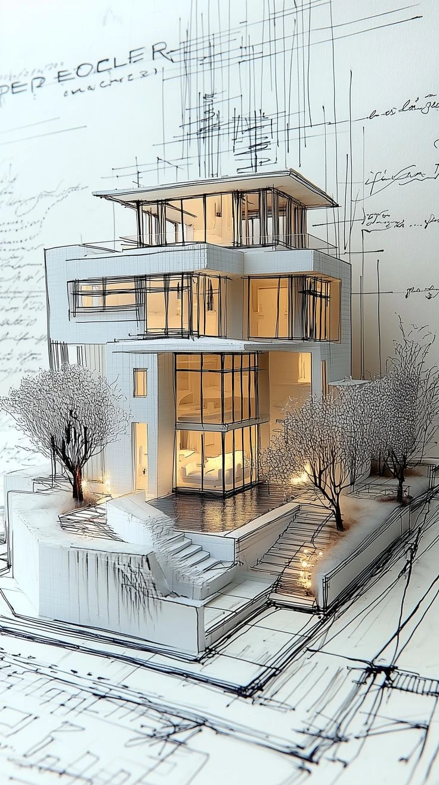
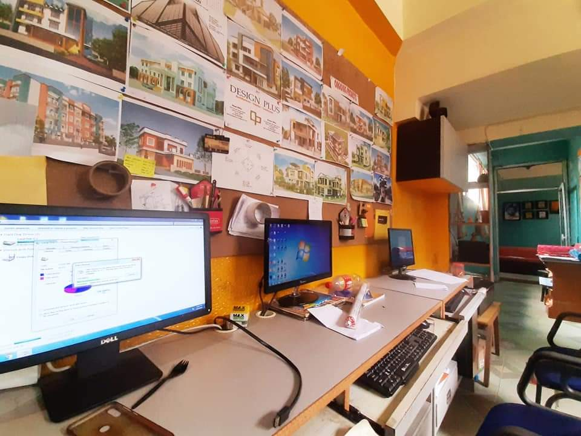
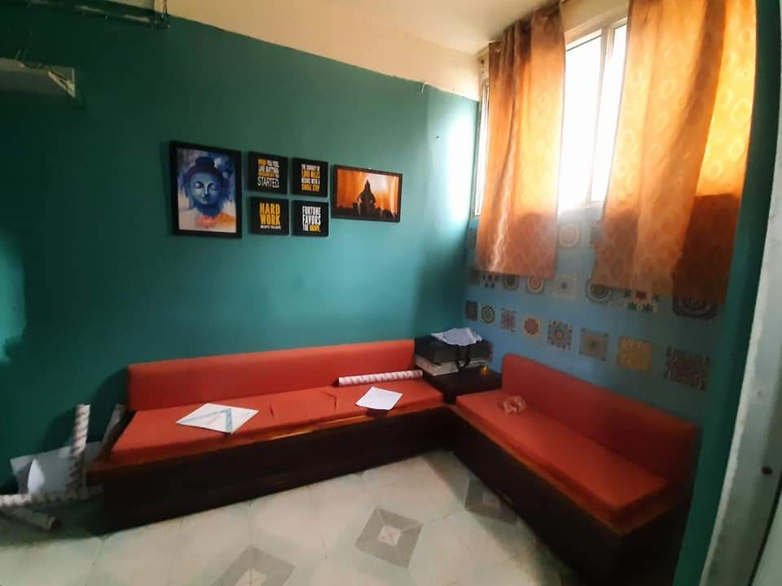
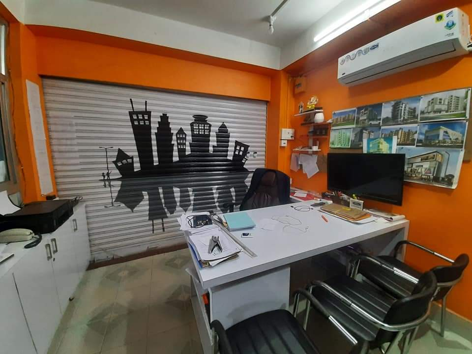
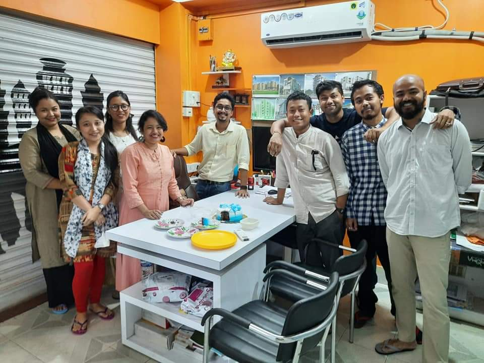
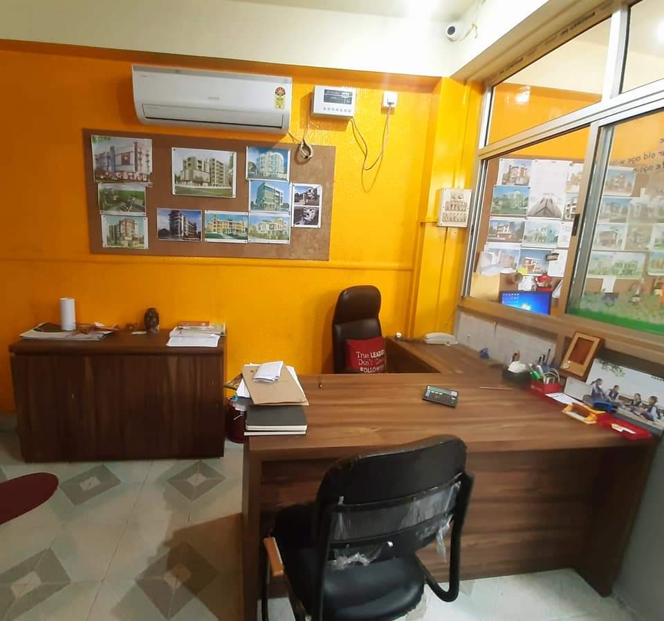
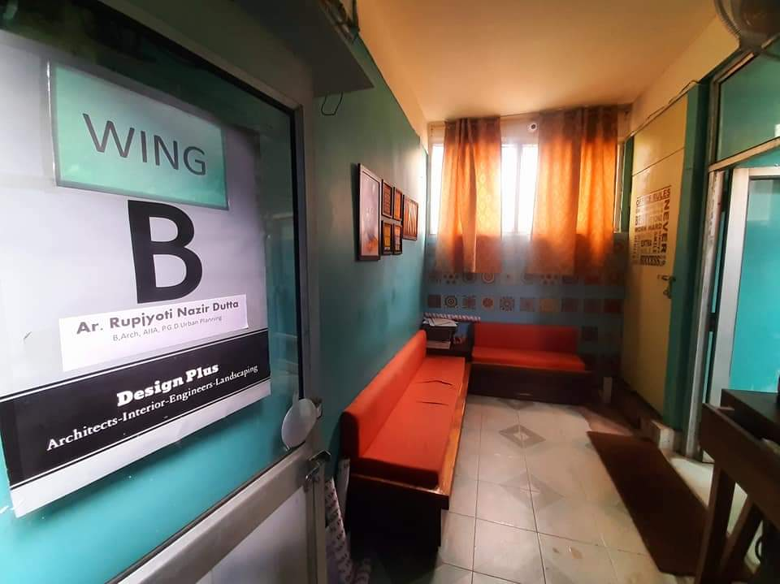
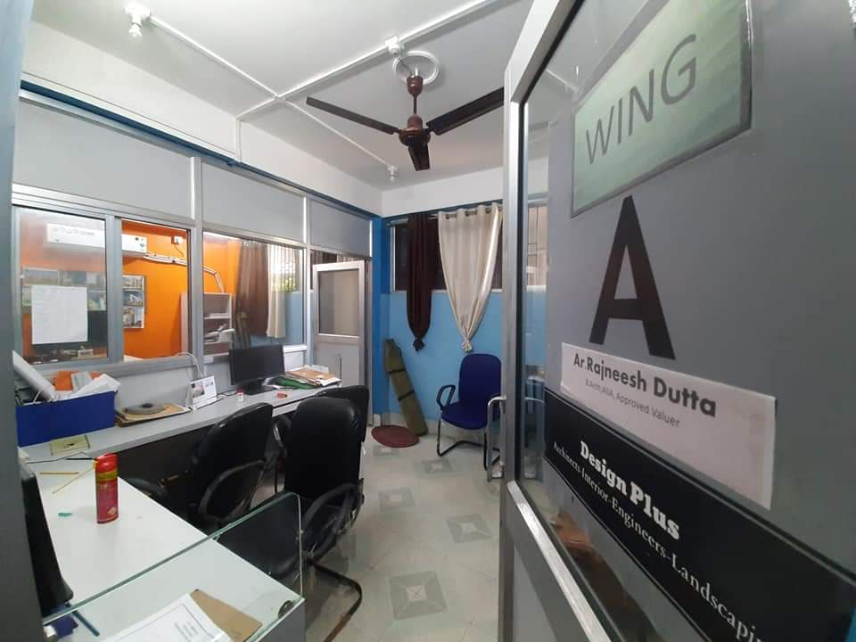
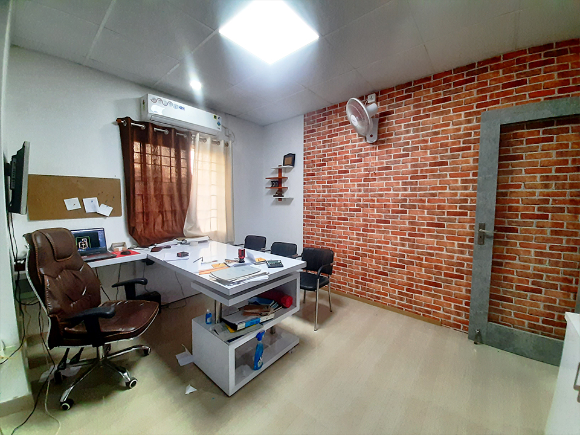

Design Plus was founded in 2015 in Jorhat with a handful of projects and an unshakeable belief that Assam deserves world-class architecture. A decade on, we have grown into one of the state's most trusted design and construction consultancies — with studios in Guwahati, North Lakhimpur and Golaghat, and clients across every district.
Our work covers the full breadth of the built environment — family homes, high-rise apartments, commercial towers, hospitals, institutions and sacred spaces. Whatever the scale, every project receives the same rigour: honest budgets, meticulous planning and delivery that respects your time.
That dedication has earned us national recognition, including the National Building Leadership Award. But the measure we value most is simpler — more than 700 completed projects across Assam, and over 500 clients who watched their vision become a building they are proud to own.








The architects, engineers and designers who give shape to every Design Plus project.
Meet Our Team